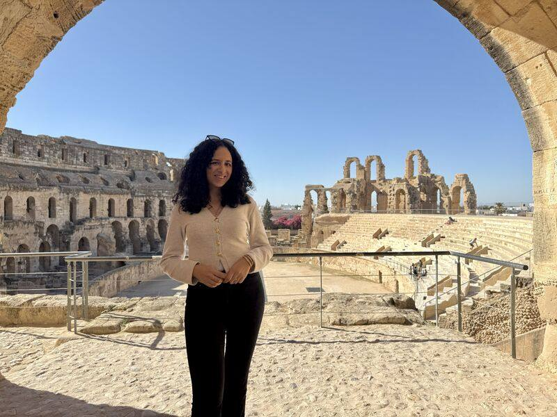
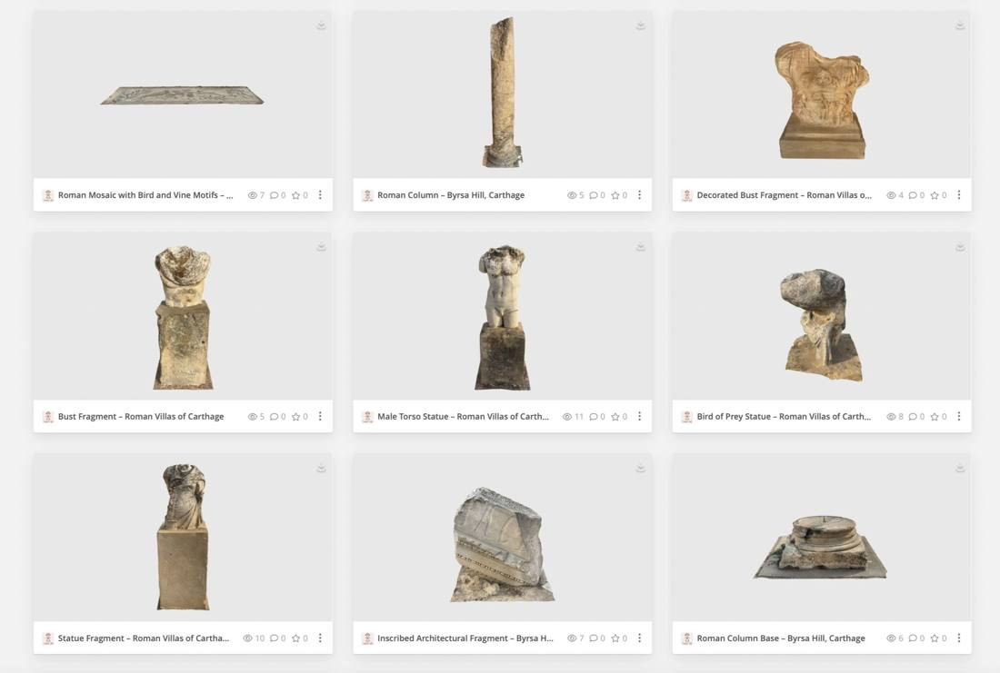
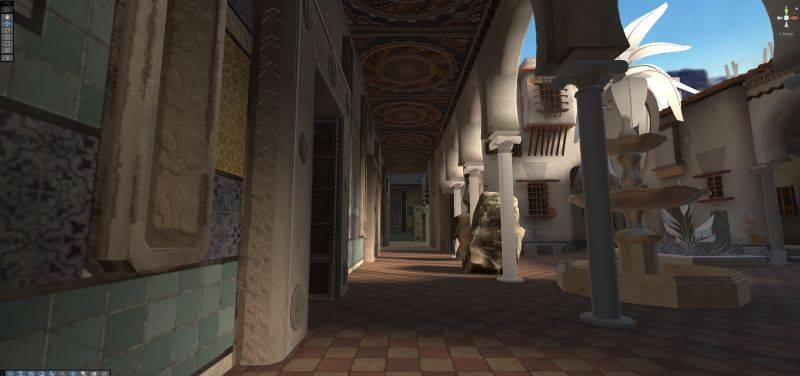
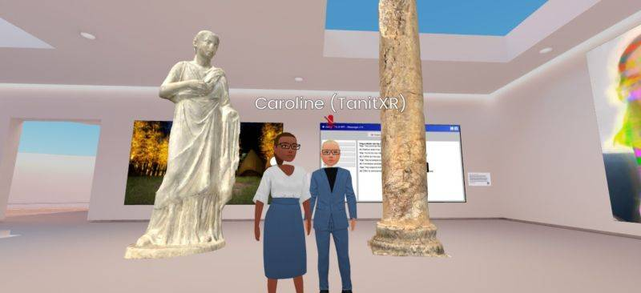
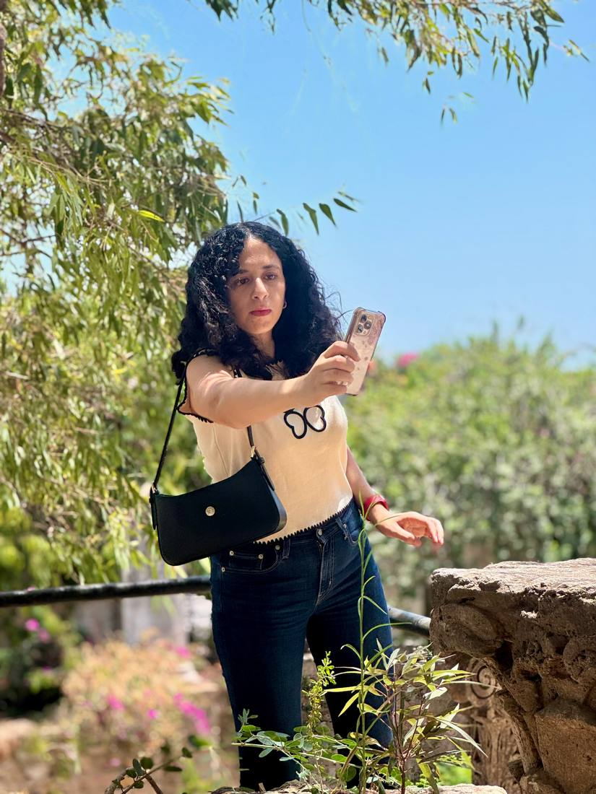
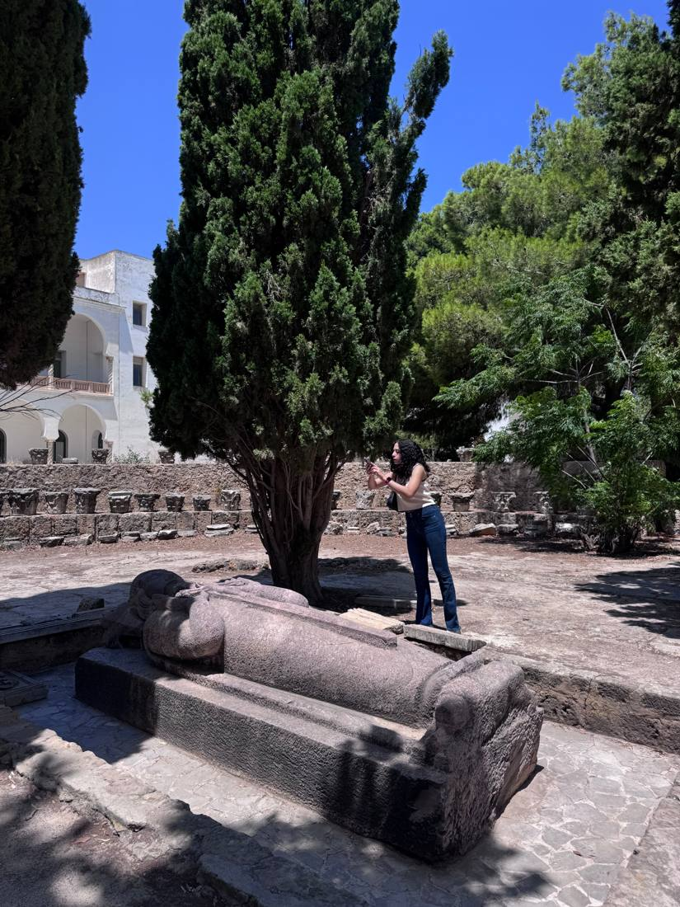
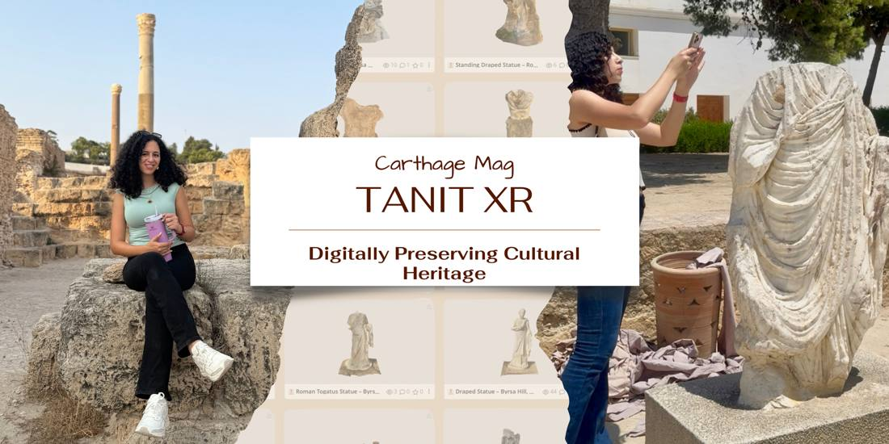

Cultural Heritage

Tanit XR is Tunisia's first open-source archive of endangered artifacts, named after the Carthaginian goddess of protection. Volunteers on the ground scan endangered sculptures, mosaics, and archaeological sites across Carthage and Tunisia — heritage spanning nearly 3,000 years — and a global community turns those scans into interactive digital artworks and VR/AR museum experiences that help Tunisians celebrate and share their cultural legacy with the world.
Since its founding in 2025, the volunteer team of technologists, artists, and heritage enthusiasts has documented more than 80 artifacts across 20 sites, published openly on tanitxr.org and Sketchfab. Its multi-scan reconstruction of the El Jem Amphitheater — the largest to date — was featured by Niantic Spatial as a benchmark for large-scale reality capture.
Beyond scanning, Tanit XR runs free education programs — including a Gaussian Splats course teaching anyone to capture and publish explorable 3D environments — because preserving heritage also means spreading the skills to do it.





